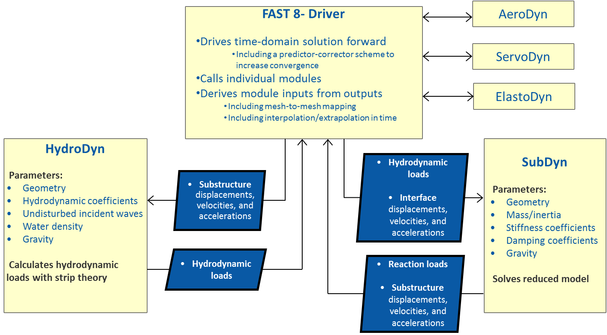

4.8.1. 소개
SubDyn 미국 에너지부 풍력 및 수력 발전 프로그램 지원을 통해 로키 국립 연구소(NLR)에서 만든 다중 멤버 고정 바닥 하부 구조를 위한 시간 영역 구조 역학 모듈입니다. 이 모듈은 FAST 에어로-하이드로-서보-탄성 컴퓨터 지원 엔지니어링(CAE) 도구에 결합되었습니다. SubDyn가 지원하는 하부 구조 유형에는 모노파일, 삼각대, 재킷 및 얕은 수심과 과도기 수심의 해상 풍력 설치에 흔히 사용되는 기타 부동 격자형 하부 구조가 포함됩니다. SubDyn는 육상 풍력 터빈의 격자 지지 구조를 모델링하는 데에도 사용할 수 있습니다.
새로운 SubDyn 모듈은 FAST 모듈화 프레임워크의 요구 사항을 따르며 다음과 같이 결합됩니다. OpenFAST, 다중 멤버 하위 구조의 동적 하중을 모델링하기 위한 새로운 기능(이전 출시된 소프트웨어 버전과 관련하여)을 제공합니다. (부록 E 및 변경 로그.txt 다양한 버전 간 변경 사항에 대한 자세한 내용은 아카이브에 제공되는 파일을 참조하세요.) SubDyn는 FAST에서 분리되고 중력 이외의 외부 하중이 없는 경우 타워 인터페이스에서 규정된 동작 하에서 하위 구조의 모드 형상, 고유 주파수 및 시간 영역 응답을 계산하기 위해 독립 실행형 코드로 구동될 수도 있습니다.
SubDyn는 (1) 선형 프레임 유한 요소 빔 모델(LFEB), (2) 정적 개선 방법(SIM)과 함께 Craig-Bampton(C-B) 방법을 통한 역학 시스템 감소라는 두 가지 주요 엔지니어링 도식을 사용하여 정확한 솔루션을 얻는 데 필요한 모드 수를 크게 줄입니다. 자세한 내용은 섹션 6 및 [SDRJ13], [DS13], [DSRJ13], [JBH+20].
SubDyn에서 하부 구조는 해저에서 스프링에 의해 고정되거나 지지되며 하부 구조 상단 노드(인터페이스 노드)의 전환 부분(TP)에 견고하게 연결된 것으로 간주됩니다. 스프링 상수는 토양-구조-상호작용(SSI)을 시뮬레이션하기 위해 사용자가 제공합니다. 향후에는 다른 구속 공식이 구현될 수도 있습니다. 하부구조의 구조적 동역학만 SubDyn 내에서 모델링되도록 의도되었습니다. FAST와 통합되면 TP, 타워 및 로터-나셀 어셈블리(RNA)의 구조 역학은 FAST의 ElastoDyn 모듈 내에서 모델링되고 유체 역학은 FAST 내에서 모델링됩니다. HydroDyn 기준 치수. 그러나 전체 격자 지지 구조 또는 전환 부분이 없는 기타 구조의 경우 요 베어링까지 전체 지지 구조가 SubDyn 내에서 모델링될 수 있습니다. 예를 들어 ElastoDyn와 반대로 SubDyn에서 타워를 모델링하면 처음 두 가지 이상의 전후 및 좌우 굽힘 모드를 포함할 수 있으므로 타워와 해당 세그먼트의 보다 일반적인 유연성을 고려할 수 있습니다. 그러나 관형 타워의 경우 ElastoDyn가 SubDyn에서 처리되지 않은 기하학적 비선형성을 고려하기 때문에 ElastoDyn의 구조 모델이 더 정확한 경향이 있습니다.
하중과 응답은 FAST 드라이버 프로그램(글루 코드)을 통해 SubDyn, HydroDyn 및 ElastoDyn 간에 전송되어 각 커플링 시간 단계에서 유체 탄성 상호 작용을 활성화합니다. 인터페이스 노드에서 TP 6자유도(DOF) 변위(3개 변환 및 3개 회전), 속도 및 가속도는 ElastoDyn에서 SubDyn로 입력됩니다. TP의 6개 반력 하중(3개의 힘과 3개의 모멘트)은 SubDyn에서 ElastoDyn로의 출력입니다. SubDyn는 또한 SubDyn에 대한 입력이 되는 국부 유체역학적 하중을 계산하기 위해 국부 구조물 변위, 속도 및 가속도를 HydroDyn로 출력합니다. 또한 SubDyn는 사용자의 요청에 따라 부재 내부 반력을 계산할 수 있습니다(그림 1 참조).


그림 4.37 SubDyn, HydroDyn 및 FAST 8 결합 상호 작용
입력 파일은 하부 구조 형상, 재료 특성, 구속조건 및 SSI 데이터 파일, 유한 요소 분해능, 역학 시스템 감소에서 유지되는 모드 수, 모달 감쇠 계수 및 보조 매개변수를 정의합니다. 형상은 전역 참조 시스템( 에 표시된 관성 프레임 좌표계)의 접합 좌표로 정의되며, 원점은 편향되지 않은 타워 중심선과 평균 해수면(MSL) 또는 지상 기반 구조물의 지면과 교차하는 지점입니다. 부재는 두 개의 관절을 연결합니다. 여러 멤버가 공통 조인트를 사용할 수 있습니다. 노드는 멤버를 여러 개(*NDiv* 입력 매개변수) 요소(노드는 그림과 같이 각 요소의 끝에 위치함)이며 모듈에 의해 계산됩니다.
현재 릴리스에서 부재의 형상은 외부 직경과 벽 두께(관형 형상 가정)로 정의되며 재료 특성은 영률, 전단 계수 및 질량 밀도로 정의됩니다. 부재 속성은 조인트에서 지정됩니다. 속성이 한 조인트에서 다른 조인트로 변경되면 내부 요소에 대해 선형으로 보간됩니다. 따라서 테이퍼형 부재는 그 특성이 단계적으로 변하는 원통형 부재로 취급됩니다. 향후 릴리스에서는 테이퍼형 유한 요소 공식이 구현될 예정이며 테이퍼형 멤버를 보다 정확하게 표현하는 것이 가능해질 것입니다.
유체역학적 하중(부력 포함)은 HydroDyn에 의해 계산되고 수중 노드(물속에 잠긴 노드)에서 글루 코드에 의해 전송됩니다. 또한 중력에 의한 자중 분포 하중 성분은 SubDyn에 의해 계산되어 모든 노드에 적용됩니다. 다른 하중 및 관성 속성은 HydroDyn 모듈 입력 파일을 통해 입력될 수 있으며, 여기에서 부재의 해양 성장 및 범람/밸러스트를 지정할 수 있습니다.
이 문서는 다음과 같이 구성되어 있습니다. 부분 SubDyn 실행 SubDyn 및 FAST 소프트웨어 아카이브를 구하고 SubDyn 또는 FAST에 연결된 SubDyn의 독립 실행형 버전을 실행하는 방법을 자세히 설명합니다. 부분 입력 파일 SubDyn 입력 파일에 대해 설명합니다. 섹션 4에서는 다음에 대해 논의합니다. 출력 파일 SubDyn에 의해 생성됨; 여기에는 에코 파일, 요약 파일 및 결과 파일이 포함됩니다. 섹션 5에서는 SubDyn 사용 시 모델링 지침을 제공합니다. SubDyn 이론은 섹션에서 다룹니다. SubDyn 이론. 부분 알려진 제한 사항 및 향후 작업 향후 작업의 개요를 설명하고 섹션 8에는 참고 문헌 목록이 포함되어 있습니다. 예제 입력 파일은 부록에 나와 있습니다. 섹션 4.8.9 B. 사용 가능한 출력 채널 요약은 부록에 나와 있습니다. 부록 D. 출력 채널 목록. 독립 실행형 SubDyn 프로그램 컴파일에 대한 지침은 부록 D에 자세히 설명되어 있습니다. 부록 E에서는 각 공개 릴리스에 대해 SubDyn에 적용된 주요 변경 사항을 추적합니다.